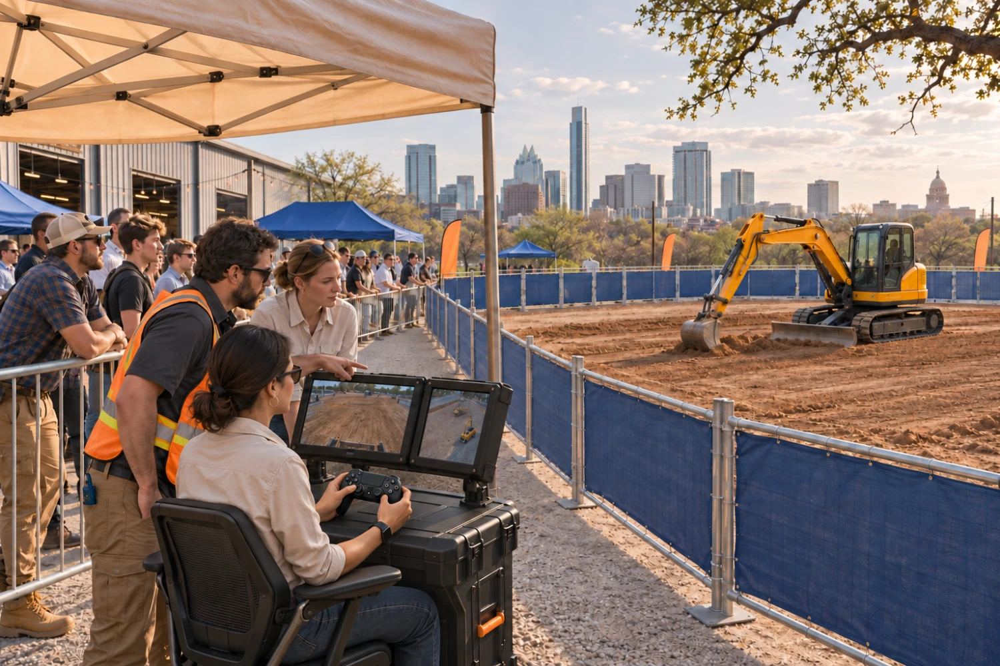

Watch a run
Watch the operator work from the control station while an engineer explains what the screen shows. Look from the screen to the machine to see how the two connect.

TerraFirma Playground · Austin pilot
Operate the machine. Meet the crew.
Explore the planTerraFirma Playground is a one-day event in East Austin. Guests can watch a TerraFirma crew move dirt by remote control, see how the equipment works, and meet the people behind it. If TerraFirma and its insurer approve guest operation, some guests can take a turn with an operator beside them.
Event concept
A TerraFirma operator and an engineer will show how they use one working machine. Guests can watch from the rail as the operator levels a small patch of dirt to a target height.
Watch the operator work from the control station while an engineer explains what the screen shows. Look from the screen to the machine to see how the two connect.
If guest operation is approved, book a turn to level the practice area with a TerraFirma operator beside you.
Pick up a card with your run result, ask a recruiter about open roles, or bring an upcoming excavation or grading job to the project desk. Stay for tacos and conversation.
The plan calls for 105 guests interested in roles, 55 potential customers or project contacts, and 50 guests from the community, trade groups, partner organizations, and press. Invite people who run or maintain equipment, plan work in the field, and build robotics, controls, software, or civil projects. For the customer group, focus on Central Texas contractors, developers, and owners with active projects.
Admission is free. The four arrival waves are split into twelve 10-minute slots, with up to 25 confirmed guests per slot. If 70% show up, about 210 people will attend. The working limit is 110 guests at a time, subject to what the venue allows after counting staff. Plan for people to stay 45–75 minutes and check how many groups could overlap around the fireside. Hold some places for walk-ups and adjust the last batch of tickets if needed. The floor lead pauses entry at the approved limit. Guests have access to tacos, water, quiet seating, bilingual check-in, and an accessible route to the rail and controls.
Show the demo host your booking or join the text waitlist. Once the host confirms you meet the requirements and you finish the approved briefing and paperwork, an operator will coach you through leveling a marked practice area. The run card records what you did and links to TerraFirma careers.
Guests can choose to share a first name or nickname on the scoreboard. The operations team will approve how to score each pass. How closely guests reach the target height comes first, and finishing the pass comes second. Speed earns no points. Recruiters follow up based on role interest and qualifications.
One guest station runs for four 60-minute blocks. At six minutes per turn, each block has room for ten turns. The plan offers 36 turns in all, with 24 available to book and 12 for the waitlist. Four slots give the crew time to reset or catch up. The plan assumes guests must be 18 or older to operate the machine, subject to TerraFirma and insurer approval.
Send a heads-up by text 15 minutes before the turn and a second message when the station is ready. Give guests without texting a return time and a place to find the host. Call up one guest and their companion at a time. Everyone else can stay by the rail or at the tables. If turns take longer in rehearsal, release fewer places and update registration. Guests can also try the simulator, which is separate from the machine, watch the narrated demo, attend the fireside, or join an operator for a walk-through.
Carry “Keep Austin Building” onto the site with the TerraFirma wordmark, the billboard’s cream and dark blue colors, and small touches of orange. Keep the work guests can see at the center of the event. TerraFirma needs to approve the artwork and confirm usage rights before the Austin Operator illustration goes to print.
Look for a private lot in East Austin near I-35. It needs stable ground for the dirt bay, a separate equipment gate, power, accessible restrooms and seating, a drop-off point, and a place to shelter indoors. Check drainage, utility markings, noise, truck access, prior uses, and what it will take to restore the site. Confirm the owner’s written permission, dates for setup and teardown, and city requirements before signing or promoting the event. A site still needs to be secured. Austin event planning guide
Walk Distribution Hall at 1500 E. 4th St. first. It advertises drive-in loading, indoor space, and an outdoor courtyard and lawn. Ask the venue to approve the machine, dirt, separation from guests, and cleanup plan. Keep the lot near Speakeasy on the list once the parcel is identified and the team can check truck access, walking routes, and shelter.
Fair Market is also worth a look for the indoor Mission Control Pod, which would bring the controls and live video indoors. The White Horse could host a separate, smaller gathering for guests 21 and older. The plan assumes a standalone Thursday. SXSW week could bring more attention, but check competing events, truck access, and higher costs before choosing it. Distribution Hall · Fair Market · The White Horse · SXSW 2027 dates
TerraFirma’s field team will choose the compact machine and operating crew. Engineering will test the approved control station, connection, and backup. The safety lead and venue will agree on the layout, guest eligibility, viewing separation, and when to stop or resume. The producer will record approvals, waivers, insurance, staffing, and the backup plan. Run a full rehearsal at least a week before the event and make the final decision before opening the gates.
TerraFirma has already shown its equipment retrofit to AGC Austin. Its Buda facility includes planned outdoor testing space that could support a remote demo. TerraFirma AGC demonstration · Buda EDC facility announcement
If TerraFirma approves a live demo but guests can’t operate the machine, an operator will run it while guests use a separate simulator. If the machine stops or the connection fails, switch to approved footage and supervised simulator turns. If the site becomes unsafe, move indoors if a backup venue is booked or reschedule. Tell guests what they can expect. The safety lead decides when to pause the demo, and the producer handles admissions and updates.
Operating layout
The warehouse and hangar give guests room to talk and watch the demo on a large LED screen. If the venue approves the courtyard, put the machine and control station there and use a separate entrance for equipment.

Group the tables into three areas for field work, technology, and projects. Hosts will help guests meet people who share their interests.
Set out 24 chairs for seated conversations. Add 40 chairs for the fireside and leave room for guests using mobility devices.
Keep the careers desk and project desk away from the speakers and main walkway so people can hear each other.
To keep guests from standing in line, hosts check people in as they arrive, send a text when the demo station is ready, and serve food at three pickup points.
The producer sets four standing tables in each group and leaves room to gather around them. Walk the main route from check-in to the viewing rail and exits with the venue and safety lead. Check the aisle with chairs pulled out and guests standing where the room will be busiest. Keep door swings, ramps, exits, and equipment access clear. If a table group makes the aisle too narrow, move it before the fireside.
The floor lead assigns two hosts to make introductions and pairs a field contact with a technical contact in each arrival window. Offer optional badges for field work, technology, and projects, with room to write what someone is looking for. Plain badges are available. At 5:45 p.m., start seating guests for the fireside and keep the quiet seats and main route open.
Rent 12 standing tables, six lower tables, and 64 chairs. Use 40 chairs at the fireside and 24 at the lower tables. Rent six work tables. Put two at check-in, two at the careers and project desks, one at food and water, and one aside for the event team and spare supplies. Ask the caterer what it brings. Set up two self-serve water stations away from the demo entrance and leave level places to watch at the rail and stage. Follow venue and vendor requirements for slip-resistant surfaces and securing outdoor equipment.
Put a low stage at the seated end of the warehouse or hangar and give it its own 40-seat viewing area. Ask the vendor to price a freestanding 12 × 7 ft LED screen. Confirm the stage size and accessible entry with the venue. Reserve a place to stand and watch clear of the aisle, and point the speakers away from the quiet desks. At the site walk, the vendor checks sightlines, glare, anchoring, floor loads, and cable routes.
At doors and between turns, play a captioned TerraFirma video with the sound off. When the operator says the demo is live, show a wide camera view and a close-up of the bucket moving dirt. Engineering must approve anything from Mission Control before it goes on the public screen. The public video feed runs separately from the machine controls. At 5:55 p.m., switch to an approved project image or clip, then return to live video when Safety clears the next block.
The sound and video lead switches sources with the stage manager. Label live video and replay on screen so guests know what they are seeing. If the feed drops or the demo pauses, switch to an approved replay or the silent TerraFirma video. Keep a spare copy and rehearse each source, the sound settings, and the restart. Check that the screen is readable from the back and sides.
| Where people could wait | Default setup | When to intervene |
|---|---|---|
| Entry and walk-ups | Two hosts scan tickets, and a bilingual host helps as needed. Send tickets before arrival and handle ticket lookups away from the door. Use 10-minute arrival slots and keep an offline guest list. | Open the third scanner if more than four guests are waiting or any wait reaches two minutes. Pause new walk-ups and offer timed returns if the flow still backs up. |
| Demo and simulator | Offer advance bookings and an online walk-up list. Share the briefing ahead of time. Call one group when the station is free. A host can give walk-ups or guests without texting a return time. | If a second party gathers near the console, redirect them to the LED or commons. If reset runs long, send a revised time before asking anyone to approach. |
| Tacos and water | Set up three pickup points that serve the same meals and two separate water stations. Ask OneTaco to label meals and refill the stations in batches around the fireside. Ask for separate pricing if the caterer normally only drops off food. | Move a runner to the busiest point and redirect to open stock if a wait hits two minutes. Refill away from guests and keep aisle approaches open. |
| Recruiting and project desks | Book a time at the desk or ask a host for an introduction at a table. If the desks are busy, guests can scan the code for more information or arrange a call later. | A host can bring the next guest to a quiet table or offer a later time. Pause appointments for the fireside. |
At 20 seconds per guest, two scanners can check in about six guests a minute. The third host helps when people arrive together or need extra assistance. Time check-in, food pickup, and the wait from the demo text to the start. The floor lead records any line that lasts two minutes and acts on it. When the venue reaches its limit, give guests a later return time.
Order eight matte signs on rigid boards with floor stands and 250 run cards. Place Welcome at the entrance, Check-in by the hosts, and Machine Demo before the rail. Put Meet the Crew by the tables, Careers and Project Desk at their desks, Fireside near the stage, and Water and Restrooms where the guest routes meet. The venue specifies exit and safety signs.
Order 24 double-sided table tents on heavy matte card stock that folds into a stand. Use one design on the 18 tables and keep six spares. The card uses the Austin billboard’s cream background, chrome Operator, bold orange lettering, skyline, and excavator. It reads “Scan to learn more.” Hosts can bring their own conversation prompts.
Ask AlphaGraphics Central Austin to quote the boards, tents, and run cards together. The artwork includes ⅛ inch of extra image beyond the cut edge. The printer will arrange the two faces on its fold template. Ask for samples that show the stock, stand, color, and readability. The print shop and brand team approve the proof before printing.
The QR code opens https://terrafirma.inc/, and the address appears below it. When TerraFirma supplies the official brandmark, ask for a proof with a small mark in the center and a clear border around the code. The brand team should scan a printed sample from both sides on iPhone and Android before approving it.
| Print surface | Guest destination | At the event |
|---|---|---|
| All table tents | TerraFirma website | Hosts can start conversations about grading, controls and project delivery. |
| Careers board and run card | Why join TerraFirma? | Review current openings from the official job board or ask the hiring host for a relevant role. |
The brand team owns the artwork and links. Operations labels the signs and table tents by location and tests every code from a printed proof on iPhone and Android. Check readability from standing and seated positions, keep a printed list of directions at check-in, and set aside six spare tents. The floor lead checks the signs after guests arrive.
Production and staffing
The crew has the morning and early afternoon to set up and rehearse. Doors open at 3:30 p.m. so trade and customer guests can arrive early. Guests can take coached turns before and after the 20-minute fireside.
Featured programming · 20 minutes
A TerraFirma operator and a controls engineer explain how they worked together on one Texas site. The operator describes what the crew saw in the dirt, and the engineer shows what Mission Control displayed on screen. The host leads the first 15 minutes and takes audience questions for the last five.
The brand lead hosts the conversation with one field operator and one controls engineer. Choose a project both can discuss and give each time to explain their side of the job. Confirm speakers before promotion and send them the questions, arrival time, and backup materials. A recruiter and a project lead stay available afterward.
| Time | What guests hear | Who handles it |
|---|---|---|
| 5:45–5:55 p.m. | Gather speakers and check the microphones, chairs, timer, and video. Hold the next demo call until the fireside ends. | The floor lead gathers the speakers. The sound team checks microphones. The demo host prepares the next guests. |
| 5:55–6:00 p.m. | Open with the operator. “What was the crew trying to do, and how did you know the ground was at the right level?” | Brand sets the scene. AV displays the approved site image. |
| 6:00–6:05 p.m. | Switch to the engineer. “What did Mission Control show you that helped the operator make that call?” | Engineering explains one real screen or control choice in plain language. |
| 6:05–6:10 p.m. | Ask how the crew’s feedback changed the way they work and what they check before trying it on the next job. | Moderator keeps both voices in the conversation. Floor lead signals one minute at 6:09. |
| 6:10–6:15 p.m. | Take two short questions if time allows. Have one question ready to get things started. Show guests where to find the viewing rail, recruiters, and project desk. | Floor lead runs the audience mic. Moderator closes on time. Safety and the relief operator clear the next block. |
Set out three chairs, three speaker microphones, and a handheld microphone for audience questions. Use a sound system and a timer. Keep the approved project photo or clip available without an internet connection. Leave an accessible aisle and space for wheelchair users in the seating area. Pause machine turns and project appointments during the fireside, and record one approved clip for the recap.
| Time | Activity | Location | Owner | What happens |
|---|---|---|---|---|
| Thu 7:00–8:00 a.m. | Take over the site | Service gate | Producer | Check in vendors with site manager, photograph conditions and mark guest and service areas. |
| 8:00–10:30 a.m. | Build demo bay | Service gate and pit | Fleet lead | Receive machine, stage dirt and install barriers. Safety and site crew verify ground and access. |
| 10:30 a.m.–noon | Build guest areas | Public side | Producer | Set signs, toilets, rail and access routes. Build stage and LED, protect cables, and position mobile check-in and grab-and-go stations. |
| Noon–1:30 p.m. | Technical rehearsal | Mission Control and pit | Engineering lead | Test console and takeover with Safety. The video team tests the live cameras, sound, screen, and offline backup. Check-in staff rehearse 25 people arriving together. |
| 1:30–2:45 p.m. | Guest-flow and fireside rehearsal | Guest areas | Floor lead | Rehearse one guest turn and the switch to the fireside. Check sightlines, exits, and access with chairs in use. Confirm speakers and backup footage. |
| 2:45–3:30 p.m. | Safety decision and staff briefing | Check-in | Safety lead | The safety lead decides which demo can open. The producer briefs the crew and confirms breaks, customer appointments, and the count at the entrance. |
| 3:30–3:45 p.m. | Gates open | Check-in and project desk | Floor lead | Play the promo video without sound. Hosts scan RSVPs as guests enter, open the waitlist, and show the first group where to go. |
| 3:45–4:45 p.m. | Guest turns, block 1 | Mission Control | Field Ops lead | Offer nine turns and keep one slot open to reset or catch up. |
| 4:45–4:55 p.m. | Narrated machine demo | Viewing rail | Engineering lead | Operator shows one pass. Engineer narrates. AV shows the bucket and dirt moving on the LED. |
| 4:55–5:55 p.m. | Guest turns, block 2 | Mission Control | Field Ops lead | Keep recruiting and sales desks open. Floor lead calls speakers at 5:45. Relief operator covers remaining turns. |
| 5:55–6:10 p.m. | Fireside · 15 minutes | LED stage | Brand moderator | Operator and engineer explain one Texas project. The video team replaces the live feed with an approved image or clip. Demo turns and project meetings pause. |
| 6:10–6:15 p.m. | Audience Q&A · 5 minutes | LED stage | Brand moderator | Floor lead handles audience mic. Close with directions to the console, hiring and project desks. |
| 6:15–7:15 p.m. | Guest turns, block 3 | Mission Control | Field Ops lead | Relief operator resumes after Safety clearance. AV restores the live feed on cue. Reopen hiring and project appointments. |
| 7:15–7:20 p.m. | Reset and next call | Mission Control | Queue lead | Confirm the next guests while the field crew resets the machine. |
| 7:20–8:20 p.m. | Guest turns, block 4 | Mission Control | Field Ops lead | Final turns. Talent and BD finish follow-up bookings. |
| 8:20–8:30 p.m. | Guest close | Public side | Floor lead | Close stations and clear guests before equipment movement. |
| 8:30–10:30 p.m. | Secure the machine and take down the site | Sitewide | Producer | The fleet team secures the machine. Confirm the attendance count and arrange overnight security if teardown continues in the morning. |
| Fri 7:00–10:00 a.m. | Restore and hand back | Sitewide | Site manager | Remove remaining dirt and barriers if required. Photograph condition and sign handback with venue. |
TerraFirma provides a host, a field operator and qualified relief operator, two engineering staff for the console and video team, a safety lead, a fleet lead, two hiring hosts, two customer and project hosts, and one person to manage contact records. Confirm relief coverage for operators, engineers, and safety staff before guests arrive.
The vendor plan includes two production leads, four people to check guests in and manage the demo list, two hosts to make introductions, three staff for security and the demo boundary, one first-aid provider in the estimate, two sound, video, and site technicians, and two people to capture footage. The four check-in and demo staff include two check-in hosts, one bilingual host who can move where needed, and one demo list lead. The producer confirms shifts and breaks with the vendors, including the crews that haul equipment, serve food, and take down the site.
| Moment | Guest experience | Crew action | Owner |
|---|---|---|---|
| Before arriving | Get arrival window, access/parking guidance, demo eligibility and weather update. Reserve a machine turn separately. | Verify confirmation, arrival windows, capacity and queue links. Send two-day and day-of reminders. Prepare offline attendance and accommodation notes for authorized staff. | Registration lead |
| Entry | Show the RSVP to a mobile host while entering. Walk-up or lookup help happens off the path. Get directions to water, seating or demo info. | Two hosts scan RSVPs. The bilingual host opens a third spot when needed. Count guests as they enter and leave, and pause walk-up entry before the lobby backs up. | Gate lead |
| While waiting | Watch from the rail or LED stage area, join a networking pod, visit the simulator or take a seat. Receive a call-up text or ask the host to find you. | Keep the waitlist online and call a group only when its station is clear. If someone misses their turn, offer one new time if there is room. | Queue lead |
| Machine turn | Check in with a host, complete approved eligibility and briefing steps, try one coached turn, and receive the run card. | Safety clears each block. Console host verifies the guest is cleared, operator leads the handoff, Engineering watches status, and the boundary marshal guards the gate. Log completion, hold or fallback. | Field Ops lead |
| Networking and fireside | Pick up tacos from one of three grab-and-go stations and take them to a high-top or seated table. Find an introduction. Choose fireside seating or a quiet conversation outside the PA area. | Float hosts keep aisles clear. First speaker call at 5:45. Hold consults and machine runs 5:55–6:15. Safety clears the restart. | Floor lead |
| Hiring and project handoff | Ask a recruiter or project lead a question, scan the card for more info, and book a voluntary follow-up. | Use company-approved systems for contact information and offer a quiet place to talk. Have a paper card for anyone who prefers to share no details. | Talent and BD leads |
| Exit and close | See clear exit signs, get recap details and ask for help to the pickup point if needed. | Count guests as they leave and clear the guest area. Check the demo and incident logs, photograph the site, and hand the space to the teardown crew. | Producer |
The field lead briefs the main operator and relief operator before rehearsal and again at their handoff. For each demo block, name the people responsible for coaching, clearing guests to participate, watching the boundary, and supporting the controls. Post meal and break assignments at staff check-in. The safety lead pauses the demo if a required position is uncovered.
The producer keeps the schedule and vendor contacts. The floor lead uses the guest services radio channel. The field and safety teams use a separate channel for the demo. Before opening, test radios and backup phones. Name who will meet emergency responders at the service gate, and show staff where to shelter, gather, and help guests who need assistance. If anything happens, the safety lead stops the demo and starts the venue response. The floor team keeps the route clear, and the producer tells guests what to do.
If more guests arrive than the site can take, pause walk-up entry and offer a later time. If scanning fails, check names against the offline list and send anyone who needs help to a roaming host. If the machine or link fails, explain which option is available, keep people’s place on the list if the demo resumes, and point guests to the crew and project desks. Follow the venue’s shelter or cancellation plan if the outdoor area becomes unsafe.
| Open item | Owner | Status | What to confirm |
|---|---|---|---|
| Venue and weather option | Producer | Site visit pending | Confirm lot terms, a rain plan, the equipment gate, and accessible routes six weeks before the event. |
| Live operation and guest access | Safety lead | Pending approval | Confirm what kind of demo is approved with the field team, engineers, venue, and insurer before promoting it. |
| Fireside speakers and project example | Brand lead | Roles proposed | Confirm speakers and backups, reserve their time, and approve the footage and video quote four weeks before the event. |
| Priority roles and project appointments | Talent lead + BD lead | Priorities still open | Confirm role links, priority accounts and owner coverage before RSVP opens. |
Planning estimates · USD
Start with one live-machine bay and test whether the demo produces hiring and project conversations worth repeating. The lookbook’s multi-day Playground informs the larger option.
90 guests · Indoor event and one approved remote link to a machine at TerraFirma’s approved test site. Existing station, no custom build.
210 guests · Live machine and console, a stage with an LED wall, a spectator rail, and staffed recruiting and project desks.
600 guests · Up to three approved machines, four stations, expanded production and additional operating shifts.
| Line item | Lean | Recommended | Larger |
|---|---|---|---|
| Venue / lot fee and site access | $2,800 | $7,500 | $19,500 |
| Dirt, grading, cleanup and restoration | $0 | $4,200 | $10,500 |
| Fencing, barriers and viewing rail | $750 | $2,900 | $6,400 |
| Tents, furniture, toilets and accessibility | $1,200 | $3,900 | $6,500 |
| Venue and site subtotal | $4,750 | $18,500 | $42,900 |
| Fleet preparation, haul or yard logistics | $1,800 | $4,900 | $12,000 |
| Console support, displays and demo AV | $5,450 | $7,850 | $14,500 |
| Fireside audio and seating | $350 | $650 | $1,500 |
| Stage, LED wall and demo feed | $0 | $7,200 | $12,000 |
| Power, lighting and network backup | $1,500 | $3,300 | $6,800 |
| Production labor and guest staffing | $2,800 | $5,700 | $13,700 |
| Fleet, technical and production subtotal | $11,900 | $29,600 | $60,500 |
| Permits, insurance and waivers | $1,400 | $3,300 | $6,000 |
| Security and medical coverage | $1,850 | $3,600 | $8,700 |
| Safety and compliance subtotal | $3,250 | $6,900 | $14,700 |
| Food, water and hospitality staffing | $2,000 | $5,200 | $11,800 |
| Hospitality subtotal | $2,000 | $5,200 | $11,800 |
| Registration, queue and signage | $1,450 | $2,602 | $4,300 |
| Photography, video and edit | $950 | $2,050 | $5,300 |
| Paid local promotion | $500 | $2,500 | $3,500 |
| Registration, content and promotion subtotal | $2,900 | $7,152 | $13,100 |
| Subtotal | $24,800 | $67,352 | $143,000 |
| Contingency · 15%, rounded up | $3,720 | $10,103 | $21,450 |
| Total | $28,520 | $77,455 | $164,450 |
The recommended budget assumes an off-peak private lot, one round trip for the equipment, one public event day, and cleanup the next morning. TerraFirma provides the machine, controls, footage, and its own staff. OneTaco is budgeted at $3,800 and beverages at $1,400. The fireside sound estimate is $650. The $7,200 stage and video estimate includes $1,100 for the stage and accessible entry and $6,100 for the LED screen and live demo video.
Ask Austin Chair & Table Rental and Ideal to coordinate setup and teardown. The lean option uses its existing screen allowance. The larger event sets aside $12,000 for a multi-day stage and LED screen. Ask vendors to include tax and service fees. Partners share invitations as part of their participation, and paid promotion covers local digital ads. Price the weather backup with the venue and confirm a new spending limit if reserving it adds to the total.
The earlier campaign plan estimated about $38,000 for an indoor booth, $105,000–$145,000 for a multi-day Playground, and about $37,000 to build a custom container. The lean event here uses an existing station and a simple indoor space. Ask Fair Market or Distribution Hall to quote it with the same local video and print vendors and one remote setup at the test site.
Ask the lot, video, and site vendors to price the three-day version for multiple shifts and three equipment transport windows. The larger estimate includes a 15% reserve, rented equipment and fixtures, and existing controls. Adding a custom container at about $37,000 would bring it to about $207,000 with the same reserve. These are estimates, and written vendor quotes are pending.
| Line item | Proposed vendor | Quote owner | What the estimate covers | Estimate | Basis |
|---|---|---|---|---|---|
| Venue and access | Distribution Hall | Producer | 1 event day plus setup/handback access. Confirm opening hours, load limits, included rooms and contract terms. | $7,500 | Allowance |
| Dirt and site restoration | Texan Trucking / venue-approved site crew | Fleet | Protect the venue’s surfaces. Price placing and removing dirt separately from restoring the site, and photograph the condition before and after. | $4,200 | Allowance |
| Pit fence and viewing rail | Austin Rent Fence | Safety | Fence, staffed service access, crowd rail and installation. Site walk sets lengths and gate counts. | $2,900 | Allowance |
| Networking furniture, cover and access | Austin Chair & Table Rental / Austin Rent Fence | Producer | Furniture and delivery allowance $1,800: 12 high-tops, six lower tables, 64 guest chairs, six service tables and 18 linens. Cover/ballast allowance $1,250; access and sanitation $850. Quote handling and strike separately. | $3,900 | Allowance informed by prior rentals |
| Machine transport and prep | TerraFirma Fleet / Texan Trucking | Fleet | Plan one round trip. Confirm when the trailer can get in and out, who cleans the machine, and how the crew will secure and unload it. | $4,900 | Allowance |
| Demo console support and screens | Ideal Productions / TerraFirma Engineering | Engineering | Cover support for the screens and practice station, staffing, and shade or glare control. TerraFirma provides the operating hardware. | $7,850 | Allowance |
| Fireside sound and setup | Ideal Productions | Producer | Small PA, four microphones, changeover and sound check. Speaker chairs supplied with the stage package. | $650 | Allowance |
| Stage deck and access | Austin Chair & Table Rental · alternate Art Seen Alliance | Producer | Ask for a low 12 × 8 ft stage, accessible entry, fabric around the base, three speaker chairs, delivery, and teardown. Confirm what the stage can support and how Ideal will place its freestanding screen. | $1,100 | Allowance |
| LED wall, cameras and playback | Ideal Productions | AV lead | Allow $3,900 for the LED screen, processor, stands, and setup, $1,200 for two camera angles and switching, and $1,000 for playback and staffing. Ask about cable ramps, wind limits, rigging, and backup video. | $6,100 | Allowance |
| Power, lighting, connectivity | Ideal Productions / Distribution Hall | Engineering | Price venue power first. Add approved power distribution, lighting, a backup connection, and a test without internet access. | $3,300 | Allowance |
| Production and floor staff | Festival & Event Production | Producer | Producer $1,500; floor lead $900; six entry, queue and networking staff × $400 = $2,400; $900 planning/strike allowance. Quote actual hours and overtime. | $5,700 | Allowance |
| Permits and coverage | Austin Center for Events / TerraFirma broker | Safety | Set aside money for permits and insurance. Get written coverage for the activities and confirm what the venue already covers. | $3,300 | Allowance |
| Security and medical | Austin–Travis County EMS / venue-approved licensed security | Safety | Price entry and boundary requirements and permitted medical coverage. Confirm scope before doors. | $3,600 | Allowance |
| Tacos and grab-and-go service | OneTaco | Producer | Plan 240 meals for 210 guests and 30 staff, with two tacos and a shared side. The published menu adds up to $3,140.70 with delivery and service. The rest covers tax, labels, packaging, and staff at the pickup points. | $3,800 | Published menu model plus allowance |
| Water, nonalcoholic drinks and beverage service | Elevate Bartending · venue service alternate | Producer | Quote two quick-service beverage points, chilled water and simple nonalcoholic options. Ask for separate labor, equipment, product, ice, cups, tax and gratuity. Price alcohol separately only if venue and TerraFirma approve it. | $1,400 | Estimate pending a quote |
| Wayfinding and table tents | AlphaGraphics Central Austin | Brand | Allow $65 each for 8 boards, $8 each for 24 tents, $0.80 each for 250 run cards, and $45 each for 8 stands. Allow $430 for proofs, finishing, and pickup. | $1,702 | Unit allowances |
| Registration, queue and guest supplies | Luma / Waitwhile | Registration | Plan $250 for tool tier or SMS, $450 for badges and check-in supplies, $200 for offline kit and spares. Confirm plan and tax at booking. | $900 | Allowance |
| Event photography and edits | ATX Event Photography | Brand | Eight-hour photo coverage benchmark $1,000 plus $1,050 for short video excerpt and edit allowance. | $2,050 | Published photo price plus video estimate |
| Paid Austin promotion | Meta / LinkedIn / YouTube | Brand | Set aside $1,200 for Meta, $900 for LinkedIn, and $400 for YouTube. Send guests to the confirmed RSVP page. | $2,500 | Spending limit |
| Estimated subtotal | $67,352 | ||||
| Contingency · 15% | $10,103 | Held centrally | |||
| Recommended total | $77,455 | Quotes pending | |||
The brand team tracks the budget. For each quote, record the vendor, total price, what it covers, the deposit, due dates, and payments. Check overtime, floor protection, cancellation terms, raw footage, and taxes where they apply. Ask the venue and producer to agree on any extra charges before paying deposits. Compare each quote with the estimate before committing, then check what was actually paid. List TerraFirma’s equipment, controls, and staff separately as contributions. Use the reserve to cover approved overages and get approval before committing more than the spending limit.
Promotion and follow-up
Count each person once at check-in. Then track who tries the machine, talks with a recruiter, or asks about a project. Someone can take more than one of those steps.
Aim for 210 people to attend. By day 14, target 25,000 local views of event posts and ads, counted as impressions, and 250 people who view the recap.
Aim for 40 people who fit a priority role and want to hear from a recruiter. The target is 20 field and 20 technical contacts, with 16 introductory calls with recruiters booked by day 14.
Aim for 15 qualified project leads. Book eight first calls by day 14 and identify three projects with a clear scope by day 30.
Use TerraFirma’s approved calendar, set the local time zone, and enter the confirmed address, capacity, cover image, and demo format. Luma makes the event live when submitted, so review the preview until the brand team and venue confirm the details. Test one RSVP link and use it for all invitations. Luma event setup
Set four free arrival windows starting at 3:30, 4:50, 5:30, and 6:30 p.m. Central. Split each into three starts ten minutes apart. If Luma lists only the broader window, give guests their exact time in the confirmation. Release places by audience and time as the site can accommodate them, and use an approval step or waitlist for overflow.
Luma handles confirmations, reminders, and check-in. A separate list holds 24 advance and 12 walk-up machine turns. Staff can link the two records for reporting, with participant details kept off the public scoreboard.
Test registration once as a new guest and once as a host. Check approval emails, the calendar time, the guest guide, phone forms, consent, capacity limits, waitlist messages, staff permissions, and the offline guest list. Check how the link looks when shared and test the link for each channel. If possible, ask someone who uses a keyboard or screen reader to try registering and finding the guest guide.
Four weeks before the event, open registration with a clip of an operator and an engineer on a real job. Share it through TerraFirma, the founders, and the crew. Give partners an invitation and a link that shows where guests found the event. Offer local trade and tech reporters a preview and an operator interview. Set aside $2,500 for paid posts and ads in Austin. Pause a channel if its links stop tracking or its arrival window fills. Share through all active TerraFirma accounts.
| Channel | Launch through event | After the event | Paid plan |
|---|---|---|---|
| Post a founder invitation and project clip four weeks out. Share the operator and engineer story two weeks out, then remind guests about the hiring and project desks three days before the event. | Case recap and recruiting links. | $900 | |
| Instagram and Facebook | Post Reels and a photo guide to the event. Ask partners to share it. Use Stories for arrival and weather updates. | Photo carousel, Reel and Stories highlight. | $1,200 across Meta |
| YouTube | Launch with a short field clip and a vertical cut. | Shorts and cleared operator/engineer excerpt. | $400 |
| TikTok | Short operator POV and what-to-expect video, using TerraFirma’s account where active. | Edited grading challenge clip. | Organic |
| X, Threads and other active profiles | Announcement, field Q&A prompt, founder and crew amplification, same-day notes. | Recap thread and crew photos. | Organic |
| Email and partners | Send the first invitation four weeks out and a hiring and project reminder two weeks out. Send arrival details two days before and on event day. | Role, project and recap follow-up by intent. | Owned / partner distribution |
Write one invitation and make vertical and landscape clips, a captioned short, and still images from the jobsite. The brand team approves posts and responds to comments. Recruiters answer job questions, and the business development team handles project replies. Give each channel, post, and partner a distinct link so the team can tell what brought people to the event. Report views, visits, registrations, attendance, and the quality of the contacts separately.
Ask crew members and trade programs such as Austin Community College’s Infrastructure Academy to introduce people for field roles. Reach out directly to controls, civil, robotics, and software candidates, including through the Texas Robotics community. Confirm which jobs are open and where people would work before publishing. Post a Spanish RSVP summary and provide bilingual check-in. ACC Infrastructure Academy · Texas Robotics Graduate Students
Invite 55 specific contractors, developers, owners, and civil firms, and ask AGC Austin about sharing the event. Use an approved Texas project as the example in the invitation. Two hosts can take twelve 15-minute appointments from 4:00–4:45 and 6:30–7:15 p.m. Ask about the work, schedule, site, and who makes decisions. Connect promising projects with an estimator or a company-approved visit.
Starting two weeks out, promote the version of the demo the field team has approved. Aim for 225 of 300 confirmations one week before the event. Check which audiences have signed up and reach out directly where the list is thin. Send arrival, access, weather, and demo details two days before the event and again that day. Use separate links for partners, ads, employees, media, and customers.
| Audience | Capture and qualification | Follow-up and measurement |
|---|---|---|
| Brand | Record one check-in number per guest and the link they used. Let guests choose whether to receive updates. Capture approved footage of the machine, controls, and crew. | Publish the recap by day 2. By day 14, report local impressions, recap viewers, media mentions, and attendance. Compare completed turns with the target of 36, and record whether guests or only operators ran the machine. Aim for no recurring lines, 90% of guests to check in within two minutes, and food pickup within two minutes. For the demo, aim for a median wait under two minutes from the call-up text, meaning at least half of guests wait less. |
| Talent | Ask which roles and work locations interest the guest and whether a recruiter can follow up. If the guest offers it, record their experience or a link to their work. A contact qualifies when a recruiter confirms a match for a priority role and the guest wants to talk. | Send relevant openings by day 1 and pass contacts to the right recruiter by day 3. Track applications within seven days and introductory recruiter calls booked by day 14. Review interviews and hires at days 30, 60, and 90. |
| Customers | Ask for the guest’s company and role, where the work is, what needs doing, and when. A contact qualifies when the work is local and within TerraFirma’s scope, the team knows who to speak with, and there is a clear next step. | The business development team sends a personal note by day 1 and confirms the next step. Review booked first calls at day 14, projects with a defined scope and owner at day 30, and bids and active projects at days 60 and 90. |
Use the same RSVP number at check-in and when a guest asks for updates, a hiring conversation, or project follow-up. Ask for a phone number only if someone wants texts for the demo. Keep waivers and access requests in the systems TerraFirma approves. The run card leads to the careers page, and the project desk has its own information link. Send the recap through the approved follow-up channel.
Put contacts who agreed to follow-up in the hiring or customer system. Mark them as coming from the Austin event, combine duplicate records, and assign a person and next step. Ask separately for permission to send marketing updates.
At day 30, the COO and brand team compare actual spending, completed demos, recruiter interviews, and customer opportunities with the targets. Use the turn count and wait times to judge what the next site needs. Choose the lowest-cost format that can deliver those results again.
COO review
Approve two East Austin site visits and quotes within a $78,000 planning cap. Confirm which machine and crew are available, who can approve guest operation, and which roles and projects the event should focus on.